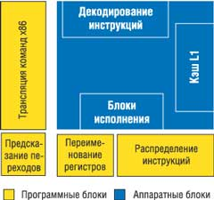
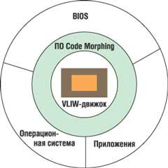
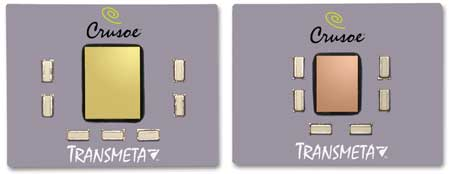
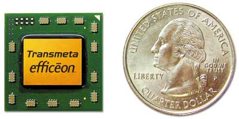
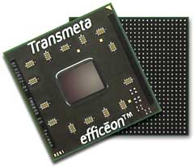

Олег Спиряев
Осенью прошлого года компания Orion Multisystems (http://www.orionmulti.com) продемонстрировала Orion Cluster Workstation, рабочую станцию нового типа, в которой множество процессоров объединены в кластер, при этом сама станция занимает объем обычного настольного компьютера. Высота 96-процессорной системы (Orion DS-96) с объемом памяти 192 Гбайт составляет примерно 68,5 см, что позволяет установить ее даже под столом. Компания выпускает и более компактную систему с 12 процессорами -- настольную модель шириной 61 см и высотой всего 11,4 см, имеющую при этом 24 Гбайт оперативной памяти и дисковое пространство объемом 1,4 Тбайт. Своими целевыми рынками компания считает киноиндустрию, технику и науки о жизни. В частности, системный интегратор BioTeam будет продавать версию "под ключ" 12-процессорной рабочей станции Orion DT-12 с более чем двумястами приложениями для биологических и фармацевтических исследований.
Все 12 процессоров рабочей станции расположены на одной плате, причем каждый из них соединен с частью системной памяти. Компьютер с 96 процессорами состоит из восьми таких плат, расположенных вертикально. Процессоры каждой платы взаимодействуют между собой посредством Gigabit Ethernet, а связь между платами осуществляется по сети 10 Gigabit Ethernet. В качестве операционной системы Orion использует версию 2.6.6 Fedora Linux. По имеющейся информации, такая система способна демонстрировать среднюю вычислительную мощь в 18 GFLOPS или 36 GFLOPS в пиковой нагрузке при определенных условиях. Кроме того, при значительно более низком энергопотреблении можно получить ту же производительность, которую имеет буквально пожирающий электроэнергию кластер из ПК или рабочих станций. Отметим, что потребляемая DT-12 мощность не превышает 200 Вт.
По оценке руководства Orion Multisystems, этого удалось достичь во многом благодаря использованию процессоров Efficeon компании Transmeta (http://www.transmeta.com). Как известно, именно Transmeta попыталась использовать преимущества своего удачного выхода на сцену, но на рынке процессоров для ПК ей пришлось столкнуться с серьезными препятствиями. Потеряв полмиллиарда долларов, руководство компании обратило свой взор на корпорацию Intel, утверждая, что именно ей совершенно несправедливо достались все дивиденды от широкомасштабного перехода отрасли на мобильные процессоры с низким энергопотреблением. Хотя многие в микропроцессорной отрасли сбросили Transmeta со счетов еще несколько лет назад, но, по мнению ряда аналитиков, точку в ее судьбе ставить пока рано.
Многообещающий дебют
В начале 2000 г. одна из самых загадочных компаний Кремниевой Долины -- Transmeta наконец-то анонсировала свой первый и долгожданный продукт -- микросхемы серии Crusoe. Transmeta была основана в 1995 г. в городке Санта-Клара (шт. Калифорния, США), недалеко от штаб-квартиры Intel. Среди ее учредителей значился такой небезызвестный в компьютерном бизнесе человек, как Поль Аллен (Paul Allen), сооснователь корпорации Microsoft. Впрочем, на руководящих постах в Transmeta трудились не менее известные персоны. CEO компании, а ныне вице-президент и директор по технологиям (СTО) Дэвид Дитцел (David Ditzel) был в свое время разработчиком первых микропроцессоров в лаборатории Bell AT&T, а затем директором SPARC-лаборатории в корпорации Sun Microsystems. Финн Линус Торвальдс (Linus Torvalds), создатель ОС Linux, также работал в Transmeta. Для тех, кто неравнодушен к компьютерным играм фирмы ID Software, о многом говорит имя другого сотрудника компании -- Дэйва Тейлора (Dave Taylor).
На протяжении пяти лет до момента официальной презентации Crusoe пресса и аналитики мало знали о том, что происходит внутри компании. Известно было лишь, что цель Transmeta заключается в разработке мобильного процессора следующего поколения. Завеса секретности над этой компанией чуть приоткрылась, когда в сентябре 1999 г. Transmeta получила два патента (датированных еще 1998 г.), из которых ясно следовало, что компания работает над новой микросхемой, эмулирующей кристалл Intel. По информации, полученной от независимых консультантов, связанных с патентной деятельностью, Transmeta была в состоянии создать микросхему и предложить ее по более привлекательной цене, нежели Intel. При этом она могла не только избежать судебного преследования за нарушение прав интеллектуальной собственности, но и позволить себе не платить лицензионные отчисления. Если верить одному из независимых экспертов, в патенте № 5832205 описывалась микросхема, которая могла транслировать команды микропроцессора Intel в 128-разрядный формат, указанный как VLIW (Very Long Instruction Word). Как известно, в традиционной процессорной архитектуре применение VLIW позволяет прочесть группу инструкций и выполнить их одновременно. Обычно команды имеют фиксированную длину, и в одном слове объединяются от четырех до шестнадцати кодов операций. Это позволяет вычислять текущий компьютерный код не только быстрее, но зачастую и эффективнее. В отличие от RISC-архитектуры, где вся тяжесть распараллеливания операций ложится на аппаратные средства, во VLIW-архитектуре основной упор делается на программное обеспечение.
ПО, называемое в патенте Code Morphing, помогает аппаратной части микросхемы транслировать инструкции "на лету", запоминать их, чтобы при вторичном использовании не прибегать к относительно медленному процессу трансляции. Это ПО также управляет процессом "сшивания" команд в VLIW. Кроме того, патент описывает технику сохранения процессорной информации во временных регистрах, откуда ее легко восстановить, если в процессе работы кристалла случится непредвиденная ошибка.
Вообще говоря, еще в 1980 г. Дэвид Дитцел (тогда еще студент) и его научный руководитель Дэвид Паттерсон опубликовали в журнале Computer Architecture News статью The Case for the Reduced Instruction Set Compute ("К вопросу о RISC"), которая стала хронологически первым упоминанием термина RISC. Как раз в те годы Паттерсон работал в Университете Беркли над созданием простого и в то же время эффективного процессора. Стремление к простоте было обосновано рядом причин. Например, известно, что в машинах со сложной системой команд и микрокодом (к числу которых относились IBM/360 и VAX) постоянно обнаруживались ошибки в микрокоде, которые приходилось исправлять. Именно для распространения "заплаток" корпорация IBM в свое время предложила дискеты, которые оказались удобнее, чем единственный на тот момент сменный носитель -- рулон магнитной ленты.
Твердотельное однокристальное исполнение исключало "мягкое" внесение заплаток, следовательно, необходимо было как-то упростить архитектуру, и это стало одним из важных аргументов в пользу RISC. К такому выводу Паттерсон пришел во время стажировки в DEC, когда он впервые задумался о создании однокристального аналога VAX. Паттерсон описал свой подход в статье и подал ее в авторитетный журнал IEEE Computer, где она была отвергнута: рецензент посчитал, что сокращение системы команд приведет к излишней трате ресурсов на микросхеме.
С другой стороны, стоит отметить, что все RISC-процессоры имели один существенный недостаток -- при всей красоте архитектуры они не умели выполнять код, написанный для x86-процессоров. Дитцел пришел к выводу, что элегантным решением проблемы может стать набор команд VLIW, который был задуман как более простой и быстрый алгоритм работы процессоров, сохраняющий совместимость с x86-приложениями. В итоге многолетних исследований и объединения знаний многих известных в компьютерном мире личностей родился процессор Transmeta Crusoe, который благодаря ряду технических особенностей мог использоваться даже в ноутбуках с конвекционным (пассивным) охлаждением.
Сначала компания анонсировала два кристалла: TM3120 и TM5400. Первый из них тактировался частотами 333, 366 и 400 МГц и был предназначен для рынка карманных устройств и мобильных Интернет-приставок, стоимостью не выше 500--1000 долл., которые работали бы под управлением Mobile Linux, разработанной Transmeta версии ОС. Кристалл TM3120, площадь которого составляла 77 мм2, создавался с соблюдением технологических норм 0,22 мкм; объем кэш-памяти 1-го уровня не превышал 96 Кбайт. Стоимость этого типа микросхем оценивалась как 65--89 долл. за штуку. Для их изготовления было заключено соответствующее соглашение с корпорацией IBM, которая имела все необходимые производственные мощности.
В отличие от микросхемы TM3120, которая оптимизировалась для 32-разрядных приложений, ТМ5400 была ориентирована скорее на 16-разрядные Windows-программы. Скорость работы кристалла могла изменяться от 500 до 700 МГц с дискретностью 33 МГц. Он был предназначен в основном для субноутбуков массой 2--4 фунта (0,9--1,8 кг). Кроме первичной кэш-памяти объемом 128 Кбайт (64+64), имелась также встроенная кэш-память 2-го уровня емкостью 256 Кбайт. Одним из несомненных преимуществ TM5400 была возможность поддержки напрямую, минуя набор микросхем, одного из наиболее перспективных типов памяти -- DDR SDRAM. Кристалл имел меньшую площадь (73 мм2), чем его предшественник, поскольку выпускался с соблюдением проектных норм 0,18 мкм.
Особенности архитектуры
Вообще говоря, ключевое отличие между х86-процессорами и Crusoe заключается в том, где находится блок трансляции команд. Дело в том, что некоторые функциональные блоки, расположенные у "обычных" процессоров внутри, в случае с Crusoe вынесены наружу. Иными словами, часть функций Crusoe выполняется программно, и к их числу относятся блок трансляций команд x86 во внутренний код процессора, предсказание переходов, работа с регистрами и инструкциями (рис. 1). Такой подход позволил Transmeta максимально упростить архитектуру кристалла, уменьшить число транзисторов в ядре, улучшить характеристики тепловыделения, энергопотребление, улучшить экономичность.
|  | Рис. 1. Блок-схема процессора Crusoe.
|
Но отсутствие аппаратных блоков в процессоре означает, что ПО, на которое возложены данные функции, разделяет ресурсы и циклы процессора с выполняемым ПО (ОС, приложениями, драйверами и т. д.). Вполне логично было бы предположить, что такой принцип работы снижает производительность, и одной из важнейших задач при создании процессора было добиться того, чтобы исполнение программной части ядра как можно меньше сказывалось на выполнении остальных операций.
Поскольку VLIW-архитектура несовместима напрямую с x86, а отказываться от такого преимущества, как накопленный багаж ПО для архитектуры x86, создателям Crusoe совсем не хотелось, был разработан промежуточный (частично аппаратный, частично программный), невидимый для программ слой -- Code Morphing. Именно он во время выполнения программы незаметно для нее преобразует ее x86-инструкции в инструкции VLIW.
Плюсы и минусы такого подхода по сравнению с традиционным очевидны. Например, это дает возможности достаточно радикально менять структуру процессора, подгоняя его к тем или иным требованиям; вносить изменения в уже выпущенные процессоры, опять-таки на уровне преобразования кода; работать с различными новыми наборами инструкций.
Можно представить себе принцип работы Crusoe по схеме, где ядро Code Morphing как бы "обволакивает" физическое процессорное ядро (рис. 2), причем ПО и BIOS даже не видят процессора как такового, и все взаимодействие ведется посредством программной прослойки.
|  | Рис. 2. Принцип работы процессора Crusoe.
|
Теперь несколько слов о логической структуре процессора. Ядро Crusoe состоит из пяти модулей четырех различных типов: два блока для операций с целыми числами, один для операций с числами с плавающей запятой, один -- для операций с памятью и еще один -- модуль переходов. Соответственно и каждая VLIW-инструкция ("молекула" в терминологии Transmeta) длиной 64 или 128 бит может состоять из четырех RISC-подобных операций этих типов ("атомов"). Все атомы выполняются параллельно, каждый соответствующим модулем. Молекулы идут друг за другом, в строгом соответствии с очередью, в отличие от большинства сегодняшних суперскалярных x86-процессоров, где используется механизм внеочередного выполнения команд (out-of-order). Это заметно упрощает внутреннюю структуру процессора, позволяя отказаться от некоторых громоздких функциональных модулей (например, декодера инструкций, коих в наборе x86 не так уж мало).
Но вернемся к принципу работы процессора. На описанный выше уровень "молекулы", по возможности максимально плотно упакованные "атомами", попадают с уровня Code Morphing, где в них превращаются исходные инструкции (на данный момент речь идет только о x86, но в перспективе ничто не мешает сделать версию транслятора и для другого набора команд). Вся окружающая среда, с которой сталкивается процессор, начиная от BIOS и заканчивая ОС и приложениями, контактирует только с Code Morphing, не имея прямого доступа к самому ядру процессора. Такой подход очень удобен, учитывая, что даже у двух первых объявленных процессоров Transmeta это самое ядро -- разное.
Один из способов увеличения производительности такого нетрадиционного способа работы -- очень логичная система кэширования. Каждая x86-инструкция, будучи оттранслирована один раз, сохраняется в специальной кэш-памяти, располагающейся в системной памяти. Таким образом, в следующий раз при выполнении этой инструкции этап трансляции можно пропустить, сразу достав из кэш-памяти необходимую цепочку молекул. Вдобавок, как обещает Transmeta, Code Morphing со временем еще и обучается: по мере выполнения программ оптимизирует их для более быстрого выполнения, обращает внимание на наиболее часто выполняемые участки кода, анализирует переходы в теле программы и т. д.
Первые процессоры Transmeta были максимально ориентированы на рынок мобильных кристаллов (что, впрочем, не мешало компании поговаривать о серверном рынке). Именно поэтому одной из главных задач при создании Crusoe было добиться эффективного энергосбережения. Для этого в семействе процессоров 5x00 была реализована технология LongRun. В отличие от других технологий энергосбережения она стала полностью независимой от ОС, т. е. процессор сам определял, какая частота от него требуется в данный момент. Штатными средствами ОС уследить за работой LongRun практически невозможно -- если мобильные х86-процессоры того времени при изменении профилей Windows реагировали на это снижением частоты, что отражалось даже в панели свойств системы, то Crusoe постоянно находился на минимуме частоты, рывком поднимая ее в моменты нагрузки. Для пользователя работа LongRun абсолютно прозрачна -- моменты, когда процессор ускоряется и замедляется, на глаз незаметны. Вместе с тем довольно необычно устроено взаимодействие LongRun и стандартных профилей контроля энергопотребления Windows.
Стоит отметить, что Intel в сжатые сроки сумела противопоставить Crusoe свой собственный процессор Pentium III с пониженным энергопотреблением. Кроме того, корпорация стала уделять более серьезное внимание израильской команде, занимавшейся разработкой ядра для мобильных процессоров Banias, архитектура которых отличалась низким энергопотреблением и вместе с тем обеспечивала увеличение производительности. В 2003 г. этот процессор уже был выпущен (под названием Pentium M), а Intel лишила Transmeta надежд на лидерство в области минимизации энергопотребления.
От Crusoe к Efficeon
В отличие от Intel и AMD, у Transmeta не было своих производственных мощностей; ее микросхемы всегда выпускались на предприятиях независимых компаний. Как уже отмечалось, первые процессоры Transmeta изготавливались на заводах IBM, однако в дальнейшем в качестве партнера для производства руководство Transmeta выбрало компанию Taiwan Semiconductor Manufacturing (TSMC). В первоначальных образцах кристаллов, выпущенных на этом предприятии, имелись дефекты, ответственность за которые часть аналитиков возложила на инженеров Transmeta. Другие же объясняли их появление неспособностью TSMC перейти на производственную технологию нового поколения. Crusoe оказался первой микросхемой, которую TSMC попыталась изготавливать по технологии 130 нм, а перестройка производственных процессов очень часто сопровождается серьезными сложностями.
С начала 2000 г. в аппаратной архитектуре Crusoe не происходило никаких серьезных изменений. С выходом модели TM5600 (рис. 3) процессоры стали производиться с учетом технологической нормы 0,18 мкм, а модель TM5800 -- по более жестким проектным нормам 0,13 мкм. Выросла тактовая частота -- с 700 до 1000 МГц, изменились параметры энергопотребления -- кристалл TM5800 с частотой 1 ГГц при размере ядра 55 мм2 требовал напряжения на ядре от 0,8 до 1,4 В, в то время как TM5600 с частотой 700 МГц и с размерами ядра 73 мм2 нуждался в напряжении 1,6 В. Некоторые архитектурные изменения Transmeta реализовала в новом семействе своих процессоров Efficeon, которые получили индекс TM8000.
|  |
| Рис. 3. Процессоры Crusoe ТМ5600 и ТМ5800.
|
Тем не менее развитие линейки ТМ5х00 продолжается и в настоящее время. Так, в прошлом году семейство процессоров Crusoe TM5800 получило дальнейшее развитие с выпуском новых серий Crusoe TM5700 и TM5900, отличающихся от своего прародителя сверхкомпактными размерами корпуса -- всего 21x21 мм. В остальном же новые кристаллы TM5700 и TM5900 мало отличаются от микросхем линейки Crusoe TM5800: тот же 128-разрядный VLIW-движок с возможностью обработки до четырех x86-инструкций за такт, технология энергосбережения Transmeta LongRun, тактовые частоты до 1 ГГц; интегрированные северный мост, контроллеры 64-разрядной памяти DDR SDRAM и 32-разрядной шины PCI. Различие между новыми линейками заключается лишь в размере кэш-памяти L2: у семейства TM5900 ее объем равен 512 Кбайт, у семейства TM5700 -- 256 Кбайт.
Основное поле деятельности для новых процессоров Crusoe TM5700/TM5900 компания Transmeta определяет как работу в составе тонких клиентов, модульных (blade) серверов, принтеров, копировальных автоматов, POS-терминалов, портативной бытовой электроники, приставок и, как их называют, ультрапортативных (ультратонких) ПК (ultra-personal computers, UPC).
Возвращаясь к Efficeon (известным ранее под кодовым названием Astro), следует отметить, что в нынешнем году должно появиться третье поколение этих микросхем. В 2003 г. на конференции Microprocessor Forum компания Transmeta официально представила первое поколение процессоров TM8000 для мобильных ПК. В данное семейство Efficeon входило три кристалла: TM8600 с 1 Мбайт кэш-памяти L2, TM8300 (512 Кбайт) и, наконец, TM8600 в корпусе миниатюрного форм-фактора -- TM8620 (рис. 4). Кристаллы Efficeon были представлены версиями с тактовыми частотами 1,0; 1,1; 1,2 и 1,3 ГГц. Новое процессорное ядро могло обрабатывать 256-разрядные VLSI-инструкции, т. е. выполнять до восьми внутренних команд за такт. Самым неожиданным стало то, что компания решила использовать в TM8000 400-МГц шину HyperTransport. По аналогии с процессорами Crusoe, TM8000 имеет встроенный в интегрированный северный мост контроллер памяти, однако вместо DDR266 Efficeon стал поддерживать стандарт DDR400 с реализацией ECC (дополнительный плюс для серверного сегмента). Помимо прочего, новый процессор обладает интегрированной шиной AGP 4X и шиной Low Pin Count (LPC) для работы с флэш-памятью.
|  |
| Рис. 4. Процессор Efficeon ТМ8620.
|
Первой компанией, анонсировавшей ноутбук на основе микропроцессора Efficeon, стала японская Sharp. Она представила модель Mebius Muramasa PC-MM2-5NE, построенную на кристалле TM8600 с тактовой частотой 1 ГГц и снабженную 10,4-дюйм XGA-дисплеем, 256 Mбайт оперативной памяти, жестким диском емкостью 20 Гбайт, а также встроенными средствами беспроводного взаимодействия стандарта 802.11g. Отмечалось, что толщина ноутбука равна всего 19,6 мм, а масса -- 910 г. По заявлению разработчиков, время автономной работы у нового Mebius Muramasa составляло, в зависимости от используемого комплекта аккумуляторных батарей, от 3,5 до 11 ч.
Для производства второго поколения Efficeon компания выбрала нового контрактора -- корпорацию Fujitsu, которая портировала собственный технологический процесс CS100 с 11-слойной металлизацией для выпуска кристаллов с учетом проектных норм 90 нм. Ко второму поколению Efficeon относятся кристаллы ТМ8800, ТМ8500 и ТМ8820 с тактовыми частотами от 1 до 2 ГГц. В сентябре прошлого года Transmeta представила мобильный процессор Efficeon TM8800 (рис. 5). Интересно, что компания Sharp объявила о начале выпуска ноутбуков на базе нового процессора за день до его официальной презентации.
|  | Рис. 5. Процессор Efficeon ТМ8800.
|
Помимо всего прочего, в новом процессоре реализована фирменная технология AntiVirusNX; тем самым Efficeon TM8800 стал первым мобильным процессором с архитектурой x86 и низким энергопотреблением, в котором имеется аппаратная поддержка антивирусной технологии Data Execution Protection, встроенной в Service Pack 2 для ОС Microsoft Windows XP.
Процессор Efficeon TM8800 рассчитан на использование в самых различных вычислительных системах, включая ноутбуки, планшетные компьютеры, сверкомпактные компьютеры, кластерные рабочие станции и мультимедийные развлекательные центры. Главное достоинство новинки, по утверждению разработчиков, заключается в сочетании высокой производительности, низкого энергопотребления и низкого тепловыделения, что позволяет отказаться от активного охлаждения и конструировать бесшумные компьютерные системы.
Перспективы и внедрения
Первоначально идеи и решения Transmeta многим в отрасли пришлись по душе. Особенно тепло были приняты эти процессоры в Японии. В этой стране клиенты проявляют больший, по сравнению с американскими и европейскими потребителями, интерес к тонким и легким ноутбукам. Корпорация Sony стала первым в мире производителем, выпустившим компьютеры на базе Crusoe. И сегодня, наряду с японскими же компаниями Fujitsu и Sharp, она устанавливает в свои модели процессор нового поколения Efficeon. Однако Intel Pentium M продолжает укреплять свои позиции, и в настоящее время именно ему принадлежит пальма первенства на мировом рынке.
Технические параметры первых процессоров Crusoe, в частности, их энергопотребление (в среднем 1 Вт), произвели довольно сильное впечатление на разработчика модульных серверов, компанию RLX Technologies (http://www.rlx.com). Дело в том, что предложенные Transmeta решения прекрасно подходили для реализации новой концепции серверов-лезвий. В RLX в числе первых приступили к разработке вычислительных систем особо высокой плотности. К сожалению, кризис среди Интернет-компаний свел на нет все усилия RLX, поскольку большинство таких компаний прекратили свое существование.
Справедливости ради стоит отметить, что на серверном рынке интерес к процессорам Transmeta и сегодня проявляют несколько компаний, в числе которых и один из признанных лидеров рынка -- корпорация HP (http://www.hp.com). Так, в прошлом году было объявлено о начале поставок HP Blade PC bc1000, основного компонента комплекса Consolidated Client Infrastructure, который позволяет компаниям централизованно администрировать настольные ПК. НР утверждает, что такой подход снижает стоимость технической поддержки, повышает производительность труда и помогает защитить данные. Новые модульные ПК можно использовать в сочетании с тонкими клиентами компании взамен подключенных к сети настольных ПК, которыми сегодня большинство предприятий обеспечивает своих сотрудников.
Идея подобных компьютеров чем-то схожа с тонкими клиентами, однако главное отличие, как отмечают специалисты, состоит в том, что сверхтонкие ПК физически размещаются не на рабочих местах сотрудников, а в стойках в специальном помещении. Такой подход, по утверждению HP, должен существенно снизить расходы на эксплуатацию клиентских систем. Итак, чтобы воспользоваться Consolidated Client Infrastructure, компания устанавливает на каждое рабочее место недорогой тонкий клиент НР, или компьютерный терминал, и соединяет его с удаленным модульным ПК по сети. Это позволяет сосредоточить все настольные компьютеры в одном месте, упростив администрирование, централизовав хранение данных и повысив производительность труда, говорится в заявлении НР. Тонкие клиенты и модульные ПК от НР позволяют сотрудникам входить в сеть, обращаться к файлам и вводить данные точно так же, как они делали это на обычных настольных компьютерах.
В НР утверждают, что компании, использующие модульные ПК, сэкономят на технической поддержке, так как размещение их в одном месте упрощает и ускоряет обслуживание ПО и аппаратуры. Обновления ПО можно проводить за одну ночь, а добавление нового модульного ПК занимает всего час. Кроме того, компании получат выигрыш в производительности, так как система способна автоматически выделять работнику новый модульный ПК в случае отказа старого. Эта функция исключает простои в ожидании ремонта, говорится в заявлении НР. При этом, в отличие от мэйнфрейма, в системе модульных ПК каждый сотрудник получает собственное виртуальное дисковое пространство, компьютер и вычислительную мощность. НР утверждает, что по сравнению со стандартными ПК ее Consolidated Client Infrastructure уменьшает стоимость технической поддержки на целых 1200 долл. в год на одного работника. Считается, что подобный комплекс -- это составная часть стратегии HP Adaptive Enterprise, нацеленной на то, чтобы помочь заказчикам ускорить окупаемость инвестиций в ИТ.
Востребованы оказались процессоры Transmeta и на рынке тонких клиентов. Так, корпорация Fujitsu Siemens Computers (http://www.fujitsu-siemens.com) расширила линейку своих тонких клиентов, представив новые изделия FUTRO серии S. "Новички" занимают на рабочем столе не больше места, чем книга среднего размера (24,6?4,8?17,7 см), и потребляют всего 25 Вт электроэнергии -- на 80% меньше, чем обычные ПК. Низкое энергопотребление объясняется именно применением экономичных процессоров Transmeta. Поскольку в FUTRO серии S нет жестких дисков и вентиляторов, они работают практически бесшумно. Разъем PCI служит для установки карты ISDN или дополнительного последовательного интерфейса. Клавиатура и мышь могут подключаться к передним или задним портам USB или к традиционному порту PS/2.
FUTRO серии S предназначены в основном для ввода данных, отправки запросов в централизованную базу данных, для работы с электронной почтой и офисными приложениями. Сегодня организации выбирают рабочие станции, руководствуясь требованиями к непрерывности работы, безопасности, эргономичности, а также с учетом их стоимости. Такие технические моменты, как тактовая частота и объем памяти, уже играют не столь важную роль, как раньше. Сдвиг приоритетов означает, что популярность тонких клиентов может значительно вырасти, поскольку они обеспечивают невысокую стоимость владения благодаря низкому энергопотреблению и компактности, а, кроме того, поддерживают централизованное управление и функции обеспечения непрерывности работы. По прогнозам аналитиков IDC, в ближайшие годы объем продаж тонких клиентов будет увеличиваться на 22,8% ежегодно.
Немалые надежды связывают в Transmeta с "ультраперсональными" компьютерами -- UPC. Компания помогает вывести эти устройства на рынок в качестве альтернативы карманным ПК и традиционным ноутбукам массой 2,2--2,7 кг. В компании утверждают, что в самое ближайшее время такие компьютеры (некоторые из них уже продаются) станут популярными. Вообще говоря, ультраперсональные компьютеры (УПК) напоминают ноутбуки. На них работает ОС Microsoft Windows ХР и все рассчитанное на нее ПО, но по размерам они ближе к карманным устройствам, а масса их измеряется не килограммами, а десятками граммов. Так, один из выпущенных в продажу УПК с 1-ГГц процессором Transmeta очень похож на PDA (электронный органайзер). Он оснащен 5-дюйм экраном (102х76 мм), а толщина его корпуса чуть больше 2 см. Экран сдвигается вверх, открывая миниатюрную клавиатуру.
Transmeta утверждает, что появление УПК стало возможно благодаря малому энергопотреблению и улучшенным характеристикам теплоотдачи у ее процессоров, а также появлению у таких компаний, как Toshiba, миниатюрных жестких дисков. УПК отличаются от КПК способностью исполнять на устройстве с поддержкой беспроводных сетей полноценную копию Windows ХР и другие приложения. Это удобно для компаний, сотрудники которых работают вне офиса, или для менеджеров, проводящих много времени на совещаниях. Служащие могут пользоваться стандартным ПО для отправки и приема документов и электронной почты, а ИТ-персоналу не придется поддерживать еще одну ОС и комплект приложений. В офисе УПК можно вставить в док-станцию и работать с ним через стандартный настольный монитор.
Процессор для УПКВ прошлом году на выставке COMPUTEX в Тайбэе (Тайвань) Transmeta представила уменьшенную версию своего микропроцессора Efficeon -- TM8620, размер корпуса которого составляет всего 21x21 мм, т. е. на 46% меньше в сравнении с TM8600. Кристалл, предназначенный, согласно заявлению компании, для применения в сверхпортативных ноутбуках, ультраперсональных компьютерах и встраиваемых системах малого форм-фактора, изготовляется по технологии 0,13 мкм и способен работать с тактовой частотой 900 или 1100 МГц при очень малом энергопотреблении. Он снабжен 192 Кбайт кэш-памяти 1-го уровня и 1 Мбайт кэш-памяти 2-го уровня. Как и все версии Efficeon, процессор интегрирован с логикой северного моста (включая контроллеры DDR и HyperTransport и графический интерфейс AGP), применяет усовершенствованный вариант технологии оптимизации энергопотребления LongRun и поддерживает наборы команд MMX, SSE и SSE2. Для использования в связке с TM8620 предлагается микросхема южного моста ULi M1563, разработанная фирмой ULi Electronics и имеющая корпус размером 23x23 мм. Она, помимо всего прочего, включает в себя контроллеры Memory Stick и SecureDigital, аудиофункции, интерфейс программного модема и средства 10/100 Ethernet, а также поддерживает шесть портов USB 2.0. |
Востребованы индустрией оказались и некоторые идеи, выдвинутые специалистами Transmeta. Так, в прошлом году было подписано соглашение, по условиям которого корпорация NEC Electronics получит от Transmeta лицензию на технологию LongRun2 (управления утечками в транзисторах) для производства полупроводниковых приборов с проектными нормами 90, 65 и 45 нм. Предполагается, что процесс позволит уменьшить энергопотребление схем на 20%. Кроме того, NEC Electronics купила небольшой пакет акций Transmeta.
Напомним, что технология LongRun2 представляет собой набор приемов, позволяющих уменьшить мощность, рассеиваемую при функционировании полупроводникового устройства, и снизить себестоимость производства. Если LongRun увеличивает или понижает тактовую частоту и напряжение питания процессора в зависимости от того, насколько активно тот используется, то ПО LongRun2, по словам представителей Transmeta, реализует ту же концепцию применительно к токам утечки, сокращая их за счет снижения уровня потребляемой энергии там, где это возможно. Сначала NEC будет применять эту технологию при производстве систем на кристалле для мобильных устройств с соблюдением проектных норм 90 нм. Массовое производство таких систем должно начаться уже в этом году. Следующим шагом будет выпуск микросхем для серверов, после чего ожидается переход на проектные нормы 65 нм, которые станут стандартом для выпуска различных микросхем.